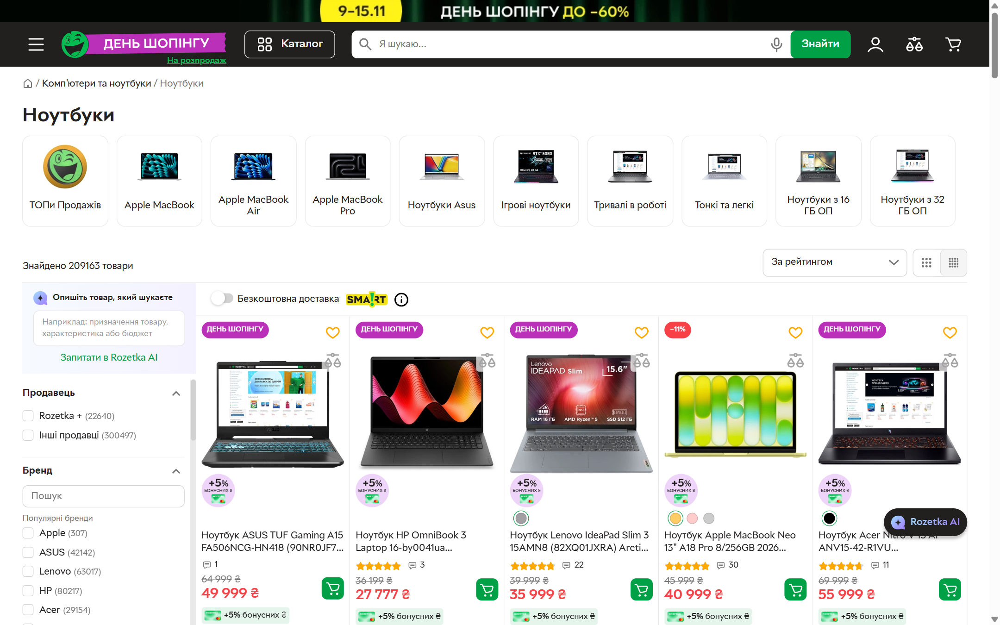
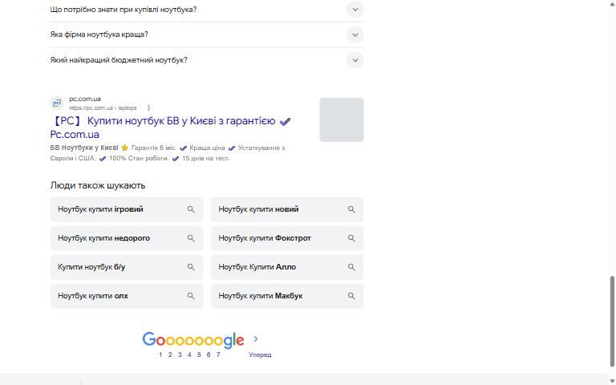
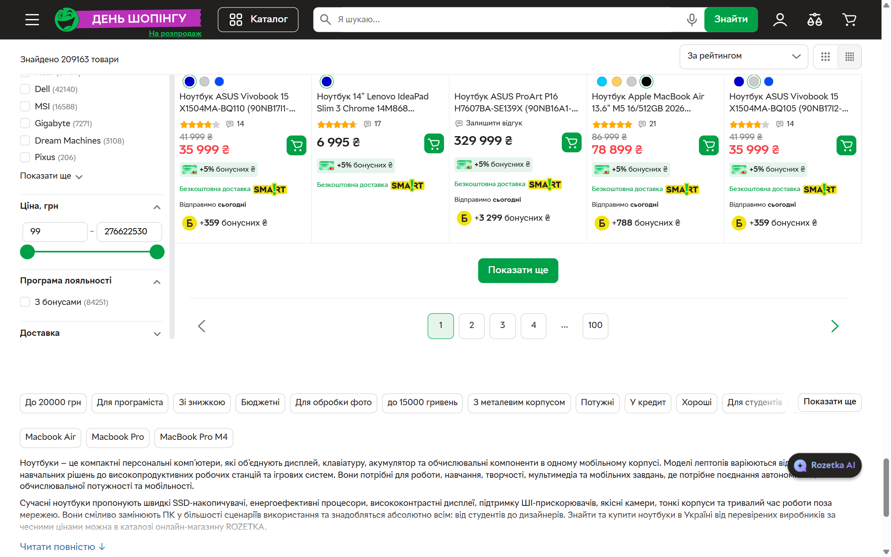
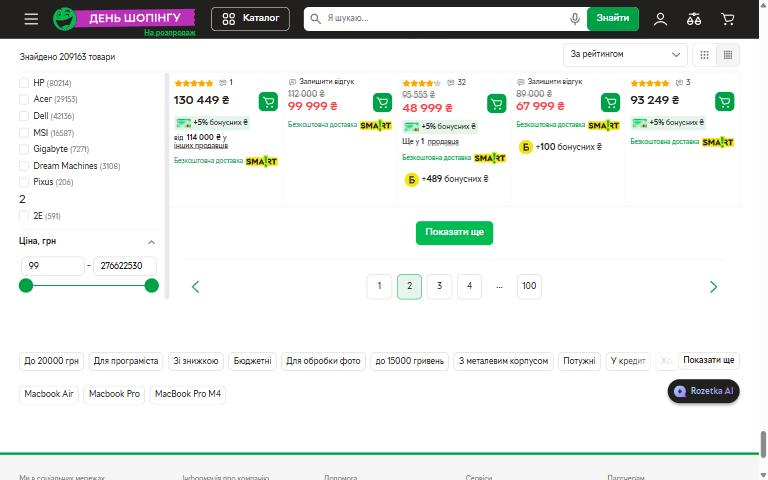

Як було раніше, чому виникли проблеми і які наслідки це має сьогодні
Сайт — це кілька сторінок тексту з картинками. Кожен клік = сервер присилає нову сторінку цілком. Довгий список ріжуть на частини, як книжку: сторінка 1, 2, 3. Просто і зрозуміло.
Сотні тисяч товарів, фото, відео, телефони замість комп'ютерів. Людина хоче бачити все миттєво й без перезавантажень, а магазин — щоб його знайшли в Google і щоб сервер не впав.
Пагінація — це спосіб показати великий список частинами. Питання лише одне: як ділити так, щоб нікому не стало гірше?

Унікальна адреса сторінки в рядку браузера: rozetka.com.ua/notebooks/page=2/. Нею можна поділитись, додати в закладки, повернутись «Назад».
Номер частини списку прямо в адресі. Сервер бачить «2» і віддає товари 61–120. Кожна частина — окрема сторінка з власною адресою.
Аналогія: номер сторінки в книжці.Спосіб, коли JavaScript просить у сервера лише нові дані й домальовує їх на поточній сторінці — без перезавантаження. Так працює «Показати ще» і нескінченна стрічка.
Аналогія: офіціант доносить страву, а не переставляє весь стіл.Document Object Model — «дерево» з усіх елементів сторінки (блоків, кнопок, картинок), яке браузер тримає в пам'яті. Кожна картка товару — десятки вузлів цього дерева.
Аналогія: креслення будинку, за яким браузер «будує» сторінку.Можливість браузера, через яку JavaScript змінює адресу в рядку без перезавантаження: history.pushState(…, '?page=2'). Тоді «Назад» і посилання працюють.
Стара хитрість: частина адреси після # на сервер не відправляється, її читає лише JavaScript. Сайти робили адреси /#!/page/2 — і без JS вони не працювали.
Search Engine Optimization — робота над тим, щоб сторінки сайту знаходились у Google. Для магазину це безкоштовні покупці: якщо Google не бачить сторінку з товаром, її ніхто не знайде через пошук.
Аналогія: вивіска й адреса магазину в довіднику.Програма Google, яка ходить сайтами за посиланнями і запам'ятовує сторінки (індексує). Він не скролить і не натискає кнопки — лише переходить за посиланнями <a href>.
Підказки в коді сторінки: «попередня частина серії тут, наступна — тут». Google радив їх з 2011 року, щоб розуміти, що сторінки 1–100 — одна серія.
Аналогія: стрілки «далі» на табличках.Сховище, де лежать усі товари, пости, повідомлення. SQL — мова запитів: «дай 20 найновіших постів». Від швидкості запиту залежить, як швидко відкриється сторінка.
Аналогія: величезний склад із картотекою.Команда «пропусти перші N рядків». Сторінка 3 по 20 = OFFSET 40. Проблема: щоб пропустити, база мусить їх перерахувати — і що далі сторінка, то довше.
Аналогія: шукати 1000-ну книжку, рахуючи з першої.Замість номера сторінки — «продовж після запису №6 812». За індексом база одразу стрибає в потрібне місце. Швидко на будь-якій глибині.
Аналогія: закладка в книжці замість перерахунку сторінок.Швидко знайти потрібне, не загубити місце після «Назад», дістатись до футера з доставкою й контактами.
Побачити кожну сторінку каталогу за звичайними посиланнями, щоб товари знаходились у Google.
Віддати будь-яку сторінку за мілісекунди, навіть 10 000-ну, і не «покласти» сервер для всіх.
Не з'їсти всю пам'ять телефона, коли людина прогорнула тисячу товарів.
Усі проблеми далі — це випадки, коли рішення покращило одну сторону і зламало іншу. Нескінченний скрол — зручно гортати людині, але погано пошуковику. OFFSET — просто програмісту, але погано базі.
Тому найкраще рішення сьогодні — гібрид: кожній стороні своє.
#!#!; Etsy провалює тест infinite scroll; Twitter відмовляється від #!Кожна сторінка має свою адресу. Зрозуміло, де ти, легко повернутись. Але на сервері — OFFSET.
Контент довантажується JavaScript. Зручно гортати, але губиться позиція, футер і URL.
«Показати ще» + URL через History API + курсор на бекенді + віртуалізація списку.
Доповідь Dan McKinley «Design for Continuous Experimentation», 2012
Команда вважала: більше товарів і швидше = кращий досвід. Infinite scroll запустили в пошуку без перевірки цієї гіпотези.
У групі з нескінченним скролом:
• менше кліків по товарах
• менше «обраного»
• менше покупок з пошуку — люди перестали ним користуватись
Місяць шукали баг — не знайшли. Окремо перевірили гіпотези: «більше результатів» і «швидкість» на покупки не вплинули. Infinite scroll прибрали.
Висновок: «It was clear we'd made search worse» — популярний патерн без перевірки гіпотез може знизити ключові метрики.
Відкрив товар → «Назад» → список з початку. Людина знову гортає або йде з сайту.
На мобільних тестувальники не могли дістатись до «Доставка», «FAQ», «Повна версія» — футер тікав униз.
Lazy-load 10–30 товарів, кнопка «Load more» після 50–100, URL оновлювати через history.pushState().
Hoa Loranger (NN/g, 2014): «Endless scrolling is not recommended for goal-oriented finding tasks» — тобто для пошуку конкретного товару чи статті.
Стрічки однорідного контенту для розваги: соцмережі, фото, новини.
Каталоги, пошук, порівняння, коли треба повернутись або знайти конкретне.
Автопідвантаження результатів, які людина не просила.
Не дало «суттєво вищої» задоволеності; зайве завантаження.
Повернули явну навігацію — результати вантажаться лише на запит, видача швидша.

href у тегах <a>, а не клікає «Показати ще» і не скролить.#page=2 Google ігнорує — для нього це та сама сторінка.?page=n.<a href>.Редизайн: усі адреси виду lifehacker.com/#!/…. Коли скрипт впав, сайти тривалий час були порожні — жодного контенту, жодного робочого посилання.
Краулери, окрім Googlebot, не бачили контенту.
Відмовився від #! і повернув рендер на сервер.
Перше завантаження — у 5 разів швидше (до 1/5 попереднього часу). Нова метрика — «time to first tweet».
Офіційно відмовляється від своєї AJAX-схеми 2009 року (_escaped_fragment_).
Рекомендує прогресивне покращення і history.pushState() замість #!.
Урок: якщо контент і адреси існують тільки в JavaScript — їх можна втратити разом з органічним трафіком.
<!-- так рекомендували робити з 2011 року --> <link rel="prev" href="/catalog?page=1"> <link rel="next" href="/catalog?page=3">
21 березня 2019 року John Mueller (Google): «We don't use link-rel-next/prev at all». Не використовували «вже кілька років» — і нікому не сказали. Помилку помітив Gary Illyes.
Google вважає сторінки серії окремими сторінками. Теги можна лишити — їх використовують інші пошуковики.
page=25&limit=100 змушує БД прочитати 2 500 рядків і викинути 2 400./admin/products.json — ≈11× швидше; підтримку page прибрали з усіх ендпоінтів до липня 2020.Рядків, які база перебирає з OFFSET:
Рядків, які база перебирає з курсором:
-- сторінка 50 001 по 20 записів SELECT id, title, created_at FROM posts ORDER BY created_at DESC, id DESC LIMIT 20 OFFSET 1000000; -- БД прочитає і відсортує 1 000 020 рядків, -- щоб віддати останні 20
-- клієнт пам'ятає останній запис сторінки SELECT id, title, created_at FROM posts WHERE (created_at, id) < (:last_created, :last_id) ORDER BY created_at DESC, id DESC LIMIT 20; -- індекс (created_at, id) → одразу в потрібне місце
Чому так: OFFSET передає лише кількість рядків, тож база мусить їх реально прочитати й упорядкувати (Markus Winand, «use-the-index-luke»).
Другий ключ (id) обов'язковий: сортування лише за неунікальним полем губить записи (Shopify).
Ціна курсора: немає «загальної кількості сторінок» і переходу на довільну сторінку (Slack).
Сторінка 1 (OFFSET 0):
Тим часом з'явився пост 11. Сторінка 2 (OFFSET 5):
Пост 6 показано двічі. При видаленні — навпаки, запис пропускається.
Сторінка 1:
З'явився пост 11 — неважливо. Сторінка 2 (id < 6):
Без дублікатів і пропусків. Нове підтягується окремо: since_id.
Slack Engineering (2017): при частих записах «вікно сторінки стає ненадійним» — у каналі нові повідомлення змушують 2-гу сторінку повторювати першу. Рішення — непрозорий cursor + next_cursor.
Twitter API: стрічки «постійно отримують нові твіти на початок», тож звичайна посторінкова навігація «не завжди ефективна» — замість сторінок max_id і since_id.
GET https://api.github.com/repos/nodejs/node/issues?state=all&per_page=100&page=459 422 — Pagination with the page parameter is not supported for large datasets, please use cursor based pagination (after/before)
Зафіксовано в задачі GitLab; повторено автором 13.11.2026 — та сама відповідь 422
459-та сторінка по 100 = пропустити 45 800 записів (OFFSET). GitHub захищає базу: глибокі сторінки заборонено. Код 422 = «запит зрозумілий, але виконувати його не будемо».
Клієнти, що будували URL з page=N, ламаються — імпорт GitLab падав і потребував виправлення.
Курсори after/before — «дай записи після цього» (закладка, а не номер сторінки). Готові адреси наступної сторінки — у заголовку Link.


Людині — «Показати ще»: товари додаються без перезавантаження.
«Назад» і посилання працюють, бо адреса стала /page=2/.
Google бачить сторінки 2 … 100 як звичайні посилання <a href>.
Футер досяжний: нове вантажиться лише після кліку.
У каталозі одночасно кнопка «Показати ще» і нумеровані сторінки — звичайні <a href="…/page=2/"> для роботів.
Після «Показати ще» адреса стає /page=2/, заголовок — «Сторінка 2» → «Назад» і посилання працюють.
Перевірено автором на rozetka.com.ua/ua/notebooks, 13.11.2026
Десктоп — кнопка «Далі», мобільні — «Інші результати».
Результати вантажаться лише коли людина попросила — швидша видача.
Кожне «Load more» оновлює URL через history.pushState(), тож «Назад» повертає на те саме місце (приклад — Skechers).
Поріг: «Load more» після 50–100 товарів, щоб футер був досяжний.
// мінімальна схема гібриду button.onclick = async () => { const { items, nextCursor, page } = await fetch(`/api/products?cursor=${cursor}`).then(r => r.json()); list.append(...items.map(render)); cursor = nextCursor; history.pushState({ cursor }, '', `?page=${page}`); // «Назад» і поширення посилань працюють };
Проблема: нескінченний скрол сам по собі не рятує — DOM росте з кожним екраном, сповільнюються розрахунок стилів і зміни DOM (web.dev).
Рішення: тримати в сторінці невелике «вікно» елементів; ті, що вийшли за межі, перевикористовуються. Кількість вузлів залежить від розміру вікна, а не від довжини списку.
Бібліотеки: react-window, TanStack Virtual (FixedSizeList, VariableSizeList, сітки).
Власний віртуалізований список: малює тільки вміст у вікні перегляду, додає елементи поступово через requestAnimationFrame і зберігає позицію скролу між екранами.
−50% часу до інтерактивності та −30% середнього часу завантаження для залогінених користувачів.
pushState; «Назад» повертає на місце.?page=n + <a href> на наступну сторінку, власний canonical.#-фрагменти.Головне: найкращі рішення — гібридні. Людині — зручна кнопка, роботу — посилання, базі — курсор, браузеру — віртуалізація.